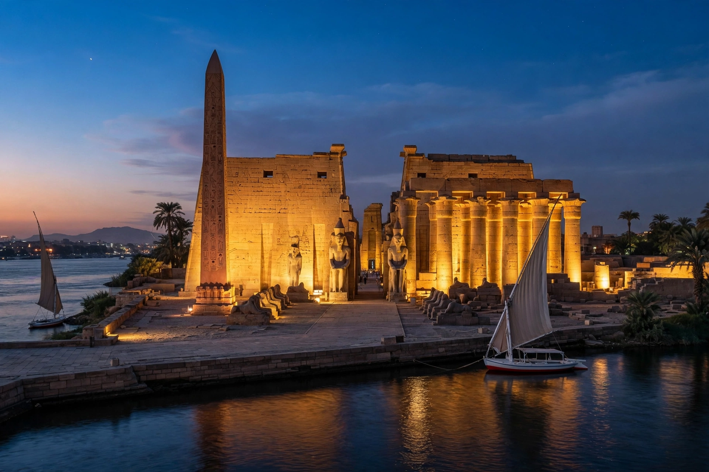

Luxor (Arabic: الأقصر, al-Uqṣur, "the palaces") is a city in Upper (southern) Egypt on the east bank of the Nile, with a population of roughly half a million. It stands on the site of ancient Thebes, the capital of Egypt at the height of its power in the New Kingdom, and is often called the world's greatest open-air museum: the temple complexes of Karnak and Luxor stand within the modern city, while across the river lie the Theban Necropolis, the Valley of the Kings, and the great mortuary temples. The name of the pharaoh Thutmose III, victor of Megiddo, is among the many carved across its monuments.
| Luxor | |
|---|---|
 Luxor Temple on the east bank of the Nile. | |
| Country | Egypt |
| Governorate | Luxor |
| Ancient name | Thebes (Waset) |
| Population | ~500,000 (metropolitan area, approx.) |
| UNESCO | Ancient Thebes with its Necropolis (1979) |
Thebes rose to prominence in the Middle Kingdom and became the religious and political capital of the New Kingdom (c. 1550–1070 BC), when its god Amun, united with Ra, headed the Egyptian pantheon and his temple at Karnak grew for two thousand years into the largest religious complex of the ancient world. The pharaohs of the 18th to 20th dynasties were buried in rock tombs in the Valley of the Kings on the west bank — most famously Tutankhamun, whose tomb was found nearly intact by Howard Carter in 1922. After the New Kingdom the city declined, suffering sack by the Assyrians in 663 BC, but its temples remained pilgrimage sites into Roman times. The modern town grew with nineteenth-century tourism, served by cruise boats and the winter sun.
On the east bank: Karnak, a vast complex of temples, pylons, and the great hypostyle hall of Seti I and Ramesses II; Luxor Temple, built mainly by Amenhotep III and Ramesses II and linked to Karnak by the 3 km Avenue of Sphinxes (ceremonially reopened in 2021); and the Luxor Museum and Mummification Museum. One of Luxor Temple's twin obelisks now stands in the Place de la Concorde in Paris. On the west bank: the Valley of the Kings and Valley of the Queens, the terraced mortuary temple of Hatshepsut at Deir el-Bahari, the Colossi of Memnon, Medinet Habu, and the Ramesseum.
Tourism dominates the economy, alongside agriculture on the fertile Nile floodplain. The city has an international airport and a railway station on the Cairo–Aswan line. Its population and hotels suffered heavily from collapses in tourism after the 1997 Luxor massacre of tourists at Deir el-Bahari and the unrest of 2011, recovering in quieter years.